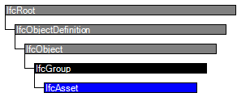

Natural language names
 | Sachvermögen |
 | Asset |
 | Biens |
| Sachvermögen |
| Asset |
| Biens |
| Item | SPF | XML | Change | Description | IFC2x3 to IFC4 |
|---|---|---|---|---|
| IfcAsset | ||||
| OwnerHistory | MODIFIED | Instantiation changed to OPTIONAL. | ||
| Identification | X | MODIFIED | Name changed from AssetID to Identification. Instantiation changed to OPTIONAL. | |
| OriginalValue | MODIFIED | Instantiation changed to OPTIONAL. | ||
| CurrentValue | MODIFIED | Instantiation changed to OPTIONAL. | ||
| TotalReplacementCost | MODIFIED | Instantiation changed to OPTIONAL. | ||
| Owner | MODIFIED | Instantiation changed to OPTIONAL. | ||
| User | MODIFIED | Instantiation changed to OPTIONAL. | ||
| ResponsiblePerson | MODIFIED | Instantiation changed to OPTIONAL. | ||
| IncorporationDate | X | X | MODIFIED | Type changed from IfcCalendarDate to IfcDate. Instantiation changed to OPTIONAL. |
| DepreciatedValue | MODIFIED | Instantiation changed to OPTIONAL. |
An asset is a uniquely identifiable grouping of elements acting as a single entity that has a financial value or that can be operated on as a single unit.
An asset is generally the level of granularity at which maintenance operations are undertaken. An asset is a group that can contain one or more elements. Whilst the financial value of a component or element can be defined, financial value is also defined for accounting purposes at the level of the asset.
There are a number of actors that can be associated with an asset, each actor having a role. Actors within the scope of the project are indicated using the IfcRelAssignsToActor relationship in which case roles should be defined through the IfcActorRole class; otherwise principal actors are identified as attributes of the class. In the existence of both, direct attributes take precedence.
There are a number of costs that can be associated with an asset, each cost having a role. These are specified through the OriginalValue, CurrentValue, TotalReplacementCost and DepreciatedValue attributes.
HISTORY New entity in IFC2x.
IFC4 CHANGE All attributes made optional and date values changed to use IfcDate.
| # | Attribute | Type | Cardinality | Description | C |
|---|---|---|---|---|---|
| 6 | Identification | IfcIdentifier | [0:1] |
A unique identification assigned to an asset that enables its differentiation from other assets.
NOTE The asset identifier is unique within the asset register. It differs from the globally unique id assigned to the instance of an entity populating a database. | X |
| 7 | OriginalValue | IfcCostValue | [0:1] | The cost value of the asset at the time of purchase. | X |
| 8 | CurrentValue | IfcCostValue | [0:1] | The current cost value of the asset. | X |
| 9 | TotalReplacementCost | IfcCostValue | [0:1] | The total cost of replacement of the asset. | X |
| 10 | Owner | IfcActorSelect | [0:1] | The name of the person or organization that 'owns' the asset. | X |
| 11 | User | IfcActorSelect | [0:1] | The name of the person or organization that 'uses' the asset. | X |
| 12 | ResponsiblePerson | IfcPerson | [0:1] |
The person designated to be responsible for the asset.
NOTE In some regulations (for example, UK Health and Safety at Work Act, Electricity at Work Regulations), management of assets must have a person identified as being responsible and to whom regulatory, insurance and other organizations communicate. In places where there is not a legal requirement, the responsible person would be the asset manager but would not have a legal status. | X |
| 13 | IncorporationDate | IfcDate | [0:1] |
The date on which an asset was incorporated into the works, installed, constructed, erected or completed.
NOTE This is the date on which an asset is considered to start depreciating. | X |
| 14 | DepreciatedValue | IfcCostValue | [0:1] | The current value of an asset within the accounting rules and procedures of an organization. | X |

| # | Attribute | Type | Cardinality | Description | C |
|---|---|---|---|---|---|
| IfcRoot | |||||
| 1 | GlobalId | IfcGloballyUniqueId | [1:1] | Assignment of a globally unique identifier within the entire software world. | X |
| 2 | OwnerHistory | IfcOwnerHistory | [0:1] |
Assignment of the information about the current ownership of that object, including owning actor, application, local identification and information captured about the recent changes of the object,
NOTE only the last modification in stored - either as addition, deletion or modification. | X |
| 3 | Name | IfcLabel | [0:1] | Optional name for use by the participating software systems or users. For some subtypes of IfcRoot the insertion of the Name attribute may be required. This would be enforced by a where rule. | X |
| 4 | Description | IfcText | [0:1] | Optional description, provided for exchanging informative comments. | X |
| IfcObjectDefinition | |||||
| HasAssignments | IfcRelAssigns @RelatedObjects | S[0:?] | Reference to the relationship objects, that assign (by an association relationship) other subtypes of IfcObject to this object instance. Examples are the association to products, processes, controls, resources or groups. | X | |
| Nests | IfcRelNests @RelatedObjects | S[0:1] | References to the decomposition relationship being a nesting. It determines that this object definition is a part within an ordered whole/part decomposition relationship. An object occurrence or type can only be part of a single decomposition (to allow hierarchical strutures only). | X | |
| IsNestedBy | IfcRelNests @RelatingObject | S[0:?] | References to the decomposition relationship being a nesting. It determines that this object definition is the whole within an ordered whole/part decomposition relationship. An object or object type can be nested by several other objects (occurrences or types). | X | |
| HasContext | IfcRelDeclares @RelatedDefinitions | S[0:1] | References to the context providing context information such as project unit or representation context. It should only be asserted for the uppermost non-spatial object. | X | |
| IsDecomposedBy | IfcRelAggregates @RelatingObject | S[0:?] | References to the decomposition relationship being an aggregation. It determines that this object definition is whole within an unordered whole/part decomposition relationship. An object definitions can be aggregated by several other objects (occurrences or parts). | X | |
| Decomposes | IfcRelAggregates @RelatedObjects | S[0:1] | References to the decomposition relationship being an aggregation. It determines that this object definition is a part within an unordered whole/part decomposition relationship. An object definitions can only be part of a single decomposition (to allow hierarchical strutures only). | X | |
| HasAssociations | IfcRelAssociates @RelatedObjects | S[0:?] | Reference to the relationship objects, that associates external references or other resource definitions to the object.. Examples are the association to library, documentation or classification. | X | |
| IfcObject | |||||
| 5 | ObjectType | IfcLabel | [0:1] |
The type denotes a particular type that indicates the object further. The use has to be established at the level of instantiable subtypes. In particular it holds the user defined type, if the enumeration of the attribute PredefinedType is set to USERDEFINED.
| X |
| IsDeclaredBy | IfcRelDefinesByObject @RelatedObjects | S[0:1] | Link to the relationship object pointing to the declaring object that provides the object definitions for this object occurrence. The declaring object has to be part of an object type decomposition. The associated IfcObject, or its subtypes, contains the specific information (as part of a type, or style, definition), that is common to all reflected instances of the declaring IfcObject, or its subtypes. | X | |
| Declares | IfcRelDefinesByObject @RelatingObject | S[0:?] | Link to the relationship object pointing to the reflected object(s) that receives the object definitions. The reflected object has to be part of an object occurrence decomposition. The associated IfcObject, or its subtypes, provides the specific information (as part of a type, or style, definition), that is common to all reflected instances of the declaring IfcObject, or its subtypes. | X | |
| IsTypedBy | IfcRelDefinesByType @RelatedObjects | S[0:1] | Set of relationships to the object type that provides the type definitions for this object occurrence. The then associated IfcTypeObject, or its subtypes, contains the specific information (or type, or style), that is common to all instances of IfcObject, or its subtypes, referring to the same type. | X | |
| IsDefinedBy | IfcRelDefinesByProperties @RelatedObjects | S[0:?] | Set of relationships to property set definitions attached to this object. Those statically or dynamically defined properties contain alphanumeric information content that further defines the object. | X | |
| IfcGroup | |||||
| IsGroupedBy | IfcRelAssignsToGroup @RelatingGroup | S[0:?] | Reference to the relationship IfcRelAssignsToGroup that assigns the one to many group members to the IfcGroup object. | X | |
| IfcAsset | |||||
| 6 | Identification | IfcIdentifier | [0:1] |
A unique identification assigned to an asset that enables its differentiation from other assets.
NOTE The asset identifier is unique within the asset register. It differs from the globally unique id assigned to the instance of an entity populating a database. | X |
| 7 | OriginalValue | IfcCostValue | [0:1] | The cost value of the asset at the time of purchase. | X |
| 8 | CurrentValue | IfcCostValue | [0:1] | The current cost value of the asset. | X |
| 9 | TotalReplacementCost | IfcCostValue | [0:1] | The total cost of replacement of the asset. | X |
| 10 | Owner | IfcActorSelect | [0:1] | The name of the person or organization that 'owns' the asset. | X |
| 11 | User | IfcActorSelect | [0:1] | The name of the person or organization that 'uses' the asset. | X |
| 12 | ResponsiblePerson | IfcPerson | [0:1] |
The person designated to be responsible for the asset.
NOTE In some regulations (for example, UK Health and Safety at Work Act, Electricity at Work Regulations), management of assets must have a person identified as being responsible and to whom regulatory, insurance and other organizations communicate. In places where there is not a legal requirement, the responsible person would be the asset manager but would not have a legal status. | X |
| 13 | IncorporationDate | IfcDate | [0:1] |
The date on which an asset was incorporated into the works, installed, constructed, erected or completed.
NOTE This is the date on which an asset is considered to start depreciating. | X |
| 14 | DepreciatedValue | IfcCostValue | [0:1] | The current value of an asset within the accounting rules and procedures of an organization. | X |
Property Sets for Objects
The Property Sets for Objects concept applies to this entity as shown in Table 232.
| ||||||||||||||||||
Table 232 — IfcAsset Property Sets for Objects |
Classification Association
The Classification Association concept applies to this entity.
The operating function of an asset within an organization may be particularly valuable in situations where one organization provides and maintains core services and another organization adds and maintains terminal services. It can classify who owns and is responsible for the asset. Operating function can be designated through the use of one or more classification references.
Group Assignment
The Group Assignment concept applies to this entity as shown in Table 233.
| ||||
Table 233 — IfcAsset Group Assignment |
| # | Concept | Model View |
|---|---|---|
| IfcRoot | ||
| Software Identity | Common Use Definitions | |
| Revision Control | Common Use Definitions | |
| IfcObject | ||
| Object Occurrence Predefined Type | Common Use Definitions | |
| IfcGroup | ||
| IfcAsset | ||
| Property Sets for Objects | Common Use Definitions | |
| Classification Association | Common Use Definitions | |
| Group Assignment | Common Use Definitions | |
<xs:element name="IfcAsset" type="ifc:IfcAsset" substitutionGroup="ifc:IfcGroup" nillable="true"/>
<xs:complexType name="IfcAsset">
<xs:complexContent>
<xs:extension base="ifc:IfcGroup">
<xs:sequence>
<xs:element name="OriginalValue" type="ifc:IfcCostValue" nillable="true" minOccurs="0"/>
<xs:element name="CurrentValue" type="ifc:IfcCostValue" nillable="true" minOccurs="0"/>
<xs:element name="TotalReplacementCost" type="ifc:IfcCostValue" nillable="true" minOccurs="0"/>
<xs:element name="Owner" nillable="true" minOccurs="0">
<xs:complexType>
<xs:group ref="ifc:IfcActorSelect"/>
</xs:complexType>
</xs:element>
<xs:element name="User" nillable="true" minOccurs="0">
<xs:complexType>
<xs:group ref="ifc:IfcActorSelect"/>
</xs:complexType>
</xs:element>
<xs:element name="ResponsiblePerson" type="ifc:IfcPerson" nillable="true" minOccurs="0"/>
<xs:element name="DepreciatedValue" type="ifc:IfcCostValue" nillable="true" minOccurs="0"/>
</xs:sequence>
<xs:attribute name="Identification" type="ifc:IfcIdentifier" use="optional"/>
<xs:attribute name="IncorporationDate" type="ifc:IfcDate" use="optional"/>
</xs:extension>
</xs:complexContent>
</xs:complexType>
ENTITY IfcAsset
SUBTYPE OF (IfcGroup);
Identification : OPTIONAL IfcIdentifier;
OriginalValue : OPTIONAL IfcCostValue;
CurrentValue : OPTIONAL IfcCostValue;
TotalReplacementCost : OPTIONAL IfcCostValue;
Owner : OPTIONAL IfcActorSelect;
User : OPTIONAL IfcActorSelect;
ResponsiblePerson : OPTIONAL IfcPerson;
IncorporationDate : OPTIONAL IfcDate;
DepreciatedValue : OPTIONAL IfcCostValue;
END_ENTITY;
 Instance diagram
Instance diagram Link to this page
Link to this page